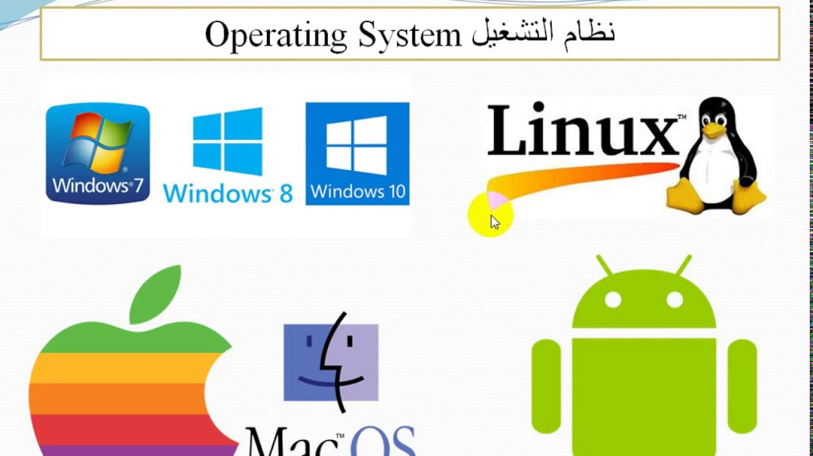

The emergence of operating systems
Links:
The function of early computers was to perform a series of individual tasks such as a calculator used to calculate numbers and perform arithmetic operations on them, and with the development and technological globalization the basic features of the operating system were developed in the fifties, which were limited to their use on specific functions such as the resident screen that can run Various programs automatically sequentially to speed up processing, and initially operating systems were not present in their modern and more complex shapes until the early 1960s when hardware features were added that enabled the use of run-time libraries, parallel processing, and in the 1980s when personal computers became popular, operating systems became Conceptually similar to those used on supercomputers. During the fifties of the last century many of the main features were a leader in operating systems and their types on mainframe computers including batch processing, input and output operations and elements, as well as temporary storage, multitasking and runtime libraries, as well as a set of programs for sorting records In the files, and from the late sixties to the late seventies, many of the capabilities of the devices that allowed to run similar programs on more than one system developed, and the early systems used microcode to implement features on their systems in order to allow different basic computer engineering to appear as similar to another structure later on, Since the eighties, operating systems and their types have evolved to become the primary and technological pillar for operating programs and applications on various computers. Operating systems and their types Computers include various types of operating systems, where each of these types is concerned with a specific function and details, and these types are one of the main elements in the formation of computer systems, and the most important operating systems used are the single user system the important task that is specialized in implementing one program Only during the basic execution time, and the other type of operating system is the important single multi-user system that allows a number of users to implement each of them one program at a time, by providing each user with an input and output unit connected with the mainframe. In addition to that, one of the most important types of operating systems is also used as a single system that uses a multi-tasking system. This system is characterized by its ability to execute more than one program simultaneously. One of the most important types of operating systems is the distributed system, which is a system that manages a group of different computers and makes them look like a single computer.
